← Index · ← Previous · Next →
Authors: Dhanvi Bharadwaj, Siddharth Dangwal, Yuewen Hou, Gokul Subramanian Ravi
Type: theory · Category: quantum information and computing · PDF: https://arxiv.org/pdf/2605.14042v1
Analysis basis: full PDF text, analyzed in chunks
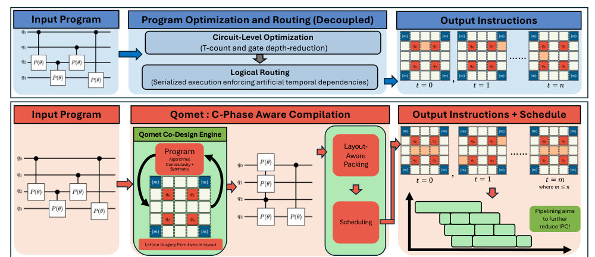
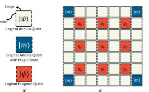
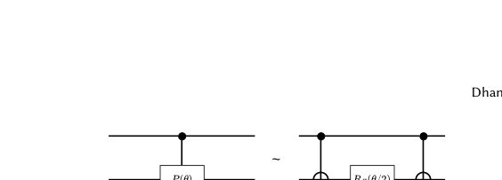
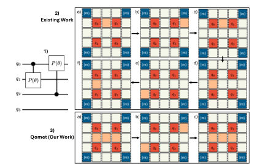
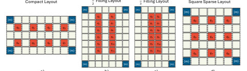
Summary. This paper introduces Qomet, a compiler designed to optimize fault-tolerant quantum computing by treating the hardware layout as a continuous, dynamic resource. By exploiting the commutativity of C-Phase gates and using a cycle-accurate scheduler, it significantly reduces the time required to execute complex quantum algorithms like QAOA and QFT.
Why it may be interesting. not directly relevant
Main problem. Existing compilers for fault-tolerant quantum computing (FTQC) use rigid, slice-based abstractions that ignore microarchitectural details, leading to high latency and inefficient resource utilization due to routing contention and artificial dependencies.
Main result. The Qomet compiler achieves up to a 59.7x reduction in execution time by leveraging C-Phase commutativity for multi-target interactions and using a cycle-accurate, event-driven scheduler.
Method. A microarchitecture-aware co-design engine that uses multi-target grouping, routing-aware packing via Steiner trees, and a dynamic, event-driven scheduler to overlap operations and minimize qubit idling.
Model / system. A fault-tolerant quantum computing architecture based on the surface code, utilizing lattice surgery (LS) for logical operations (merge/split) and magic state distillation/cultivation for non-Clifford gates.
Key observables. Execution latency (clock cycles), instructions per cycle (IPC), resource utilization, and routing footprint.
Important parameters / regimes. Code distance (d), magic state availability (MS-Abundant vs. MS-Starved), and the number of nearest candidates (k) for magic state selection.
Assumptions / limitations. The approach is specifically designed for surface-code-based lattice surgery architectures and assumes a regime where quantum and classical resources are significant constraints.
Figures summary. Figure 1 compares existing work to Qomet's speedup; Figure 2 shows the Qomet Co-Design Engine architecture; Figure 3 depicts the surface code 2D layout; Figure 4 details the temporal steps of a CNOT via lattice surgery; Figures 5-6 illustrate gate decomposition and parallelism; Figures 7-13 show performance scaling across various layouts, qubit counts, and magic state regimes.
Paper structure. The paper introduces the problem of inefficient FTQC compilation, presents the Qomet compiler framework (grouping, packing, and rotation realization), details the event-driven scheduling and cost-aware magic state selection, and concludes with extensive benchmarks on QAOA and QFT workloads across different hardware regimes.
Achieving practical quantum advantage on fault-tolerant quantum computers (FTQC) is fundamentally constrained by the substantial spatial and temporal overheads required to map logical operations onto physical hardware. Existing compilation approaches typically adopt coarse-grained, slice-based abstractions that overlook fine-grained microarchitectural effects, such as routing contention, leading to inefficient resource utilization and limited alignment between algorithm structure and hardware capabilities. This work presents a microarchitecture-aware compilation approach that integrates algorithmic structure directly with lattice surgery (LS) execution. By leveraging the commutativity of C-Phase operations, the method transforms inherently sequential gate sequences into concurrent multi-target interactions, effectively removing artificial dependencies and exposing significant instruction-level parallelism. To enable this, we design a dynamic, event-driven scheduling strategy that accurately models spatial layout and routing constraints, allowing operations to overlap in time while minimizing contention. Through improved coordination of computation and communication, this approach substantially reduces idle resources and achieves up to a 59.7$\times$ reduction in execution time compared to standard baselines.
Authors: Rinsuke Yamada, Jun Fujioka, Minoru Kawamura, Tatsuya Okawa, Yoshio Kaneko, Shiro Sakai, Motoaki Hirayama, Ryotaro Arita, Kiyohiro Adachi, Daisuke Hashizume, Yoshinori Tokura
Type: experiment · Category: strongly correlated electrons · PDF: https://arxiv.org/pdf/2605.14180v1
Analysis basis: full PDF text, analyzed in chunks
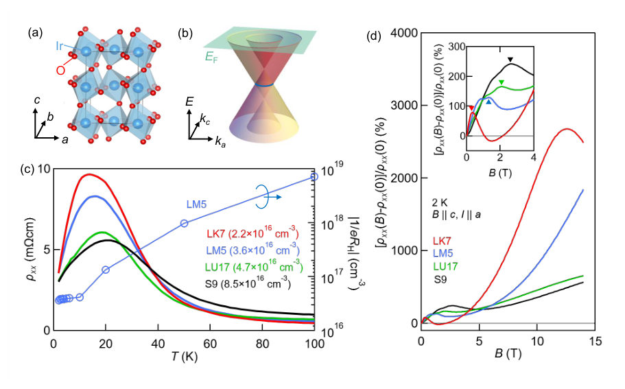
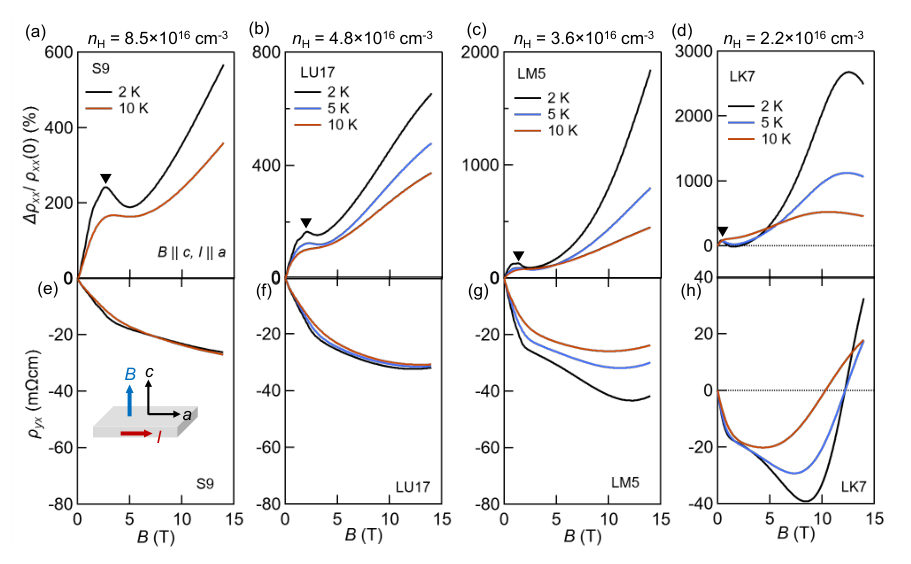
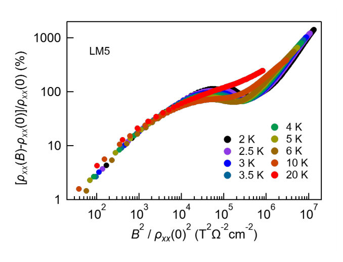
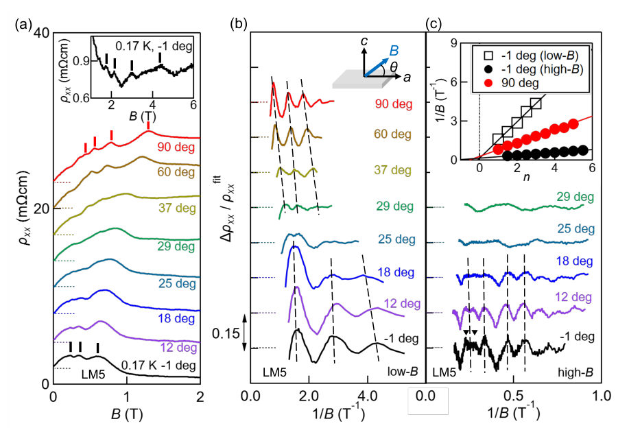
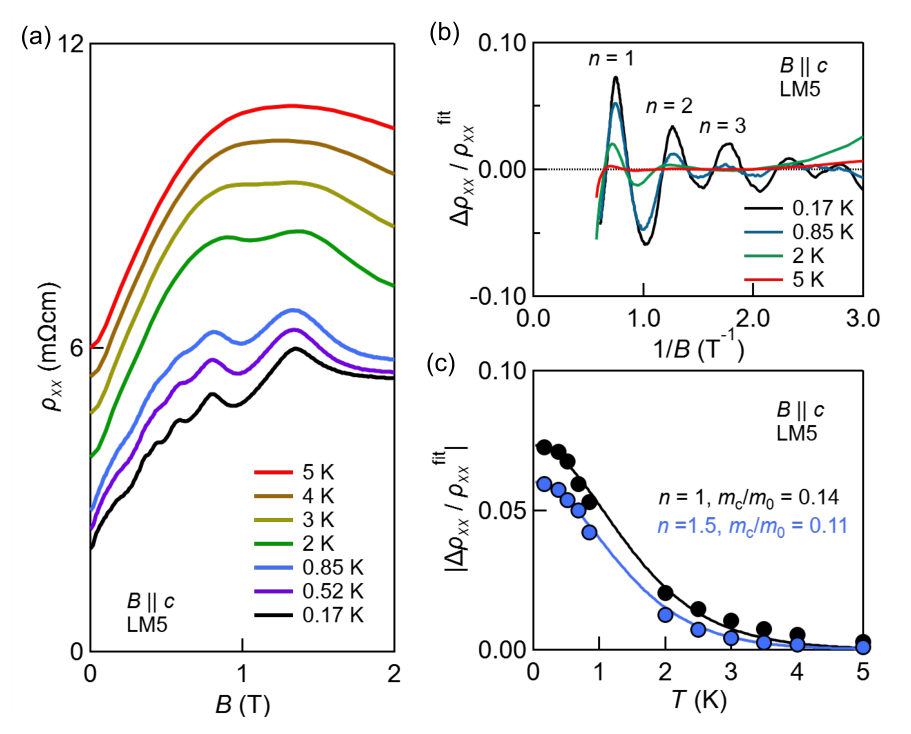
Summary. This paper explores how changing the carrier density in the Dirac semimetal CaIrO3 affects its transport properties. It demonstrates that at low densities, the system enters a quantum limit where enhanced Coulomb interactions lead to non-linear magnetoresistance. The results confirm the presence of a robust Dirac dispersion characterized by a constant Fermi velocity.
Why it may be interesting. not directly relevant
Main problem. Investigating the carrier-density dependence of magnetotransport properties, specifically the origin of giant magnetoresistance and the transition in MR scaling behavior in the correlated Dirac semimetal CaIrO3.
Main result. The study finds that as carrier density decreases, mobility and magnetoresistance increase, with the MR scaling transitioning from B-linear to B-nonlinear (alpha > 2) due to enhanced long-range Coulomb interactions in the quantum limit. The constant Fermi velocity across different carrier densities provides strong evidence for k-linear Dirac dispersion.
Method. Transport measurements including resistivity, Hall effect, and Shubnikov-de Haas oscillations were performed on single crystals at low temperatures and high magnetic fields, supplemented by DFT+DMFT modeling.
Model / system. The system is CaIrO3, an orthorhombic perovskite characterized as a correlated Dirac semimetal with a line node in its energy dispersion and 5d orbitals featuring a j_eff = 1/2 multiplet.
Key observables. Carrier density (nH), mobility, transverse magnetoresistance (MR) ratio, effective mass (mc), Fermi velocity (vF), and MR exponent (alpha).
Important parameters / regimes. Low carrier density regime (nH ~ 2.2 x 10^16 cm^-3), quantum limit, magnetic fields up to 14 T, and temperatures down to 2 K.
Assumptions / limitations. Difficulty in precisely estimating the Thomas-Fermi screening length and the exact strength of the impurity potential.
Figures summary. Fig 1 shows the crystal structure, energy dispersion schematic, and temperature/density dependence of resistivity and MR; Fig 2 compares Hall resistivity and MR ratio across samples; Fig 3 verifies Kohler's rule.
Paper structure. The paper introduces the material and its electronic structure, presents transport data across varying carrier densities, analyzes quantum oscillations to characterize the Dirac dispersion, discusses the scaling of magnetoresistance, and concludes with a physical interpretation of the scattering mechanisms.
We report the carrier density dependence of the magnetotransport property in the correlated Dirac semimetal CaIrO$_3$. In the dilute carrier density region ($n_{\rm H}$ $\sim 2.2 \times 10^{16} \,@@MATH0MATH@@\rm{cm}^{2}/\rm{Vs}$ at $2 \, \mathrm{K}$, and the transverse magnetoresistance (MR) reaches $2,000 \,$\% at $12 \, \mathrm{T}$. The analysis of quantum oscillations and Hall conductivity shows that the Fermi velocity is nearly independent of the cross-sectional area of the Fermi surface, or equivalently the carrier density, supporting a $k$-linear dispersion of the Dirac node. The field dependence of magnetoresistivity is nearly $B$-linear in the moderate carrier density region ($n_\mathrm{H} \geq 4 \times 10^{16}\,$cm$^{-3}$), but scales with $B^α$ ($α> 2$) in the lower carrier density region. The variation of magnetoresistivity is likely affected by the enhanced long-range Coulomb interaction in the quantum limit, where Dirac electrons are subject to the magnetic confinement.
Authors: Zoë Webb-Mack, Natalie Klco
Type: theory · Category: quantum information and computing · PDF: https://arxiv.org/pdf/2605.15076v1
Analysis basis: full PDF text, analyzed in chunks
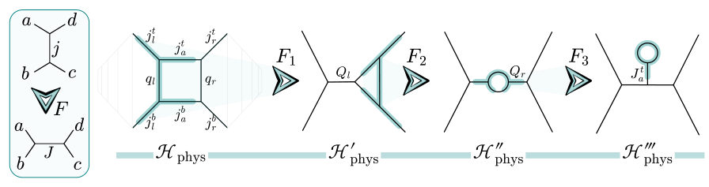
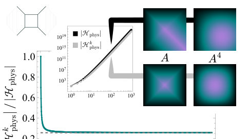
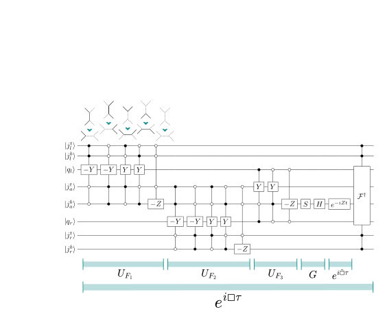
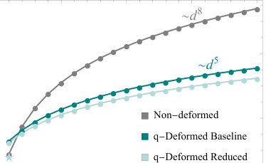
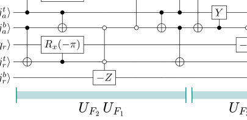
Summary. The paper proposes a method to simulate q-deformed SU(2) lattice gauge theories on quantum computers with significantly lower gate complexity. By using q-deformation and gauge-variant completions, the authors reduce the scaling of required gates from O(d^8) to O(d^5). This approach provides a more efficient and unitary-preserving way to truncate gauge fields for quantum simulation.
Why it may be interesting. This paper is highly relevant for many-body dynamics and quantum computing as it provides a scalable method for simulating gauge theories, which are fundamental to understanding strongly interacting quantum fields.
Main problem. The difficulty of implementing the magnetic term of the SU(2) lattice gauge theory Hamiltonian on quantum hardware due to high gate complexity and the non-unitarity of truncated operators.
Main result. The authors demonstrate that using q-deformed SU(2)k theory and Gauge-Variant Completions (GVC) reduces the quantum resource scaling for generalized-controlled-X gates from O(d^8) to O(d^5).
Method. The study employs a diagrammatic approach using phased F-moves and G-moves, leveraging q-deformed 6j symbols and symmetry analysis (flux hierarchy inversion) to optimize circuit synthesis.
Model / system. A q-deformed SU(2)k Yang-Mills pure-gauge theory on a 1D lattice (plaquette chain) with periodic boundary conditions, utilizing a truncated Hilbert space with dimension d = k + 1.
Key observables. Quantum resource upper-bounds (GCX gate counts), circuit depth, and the ratio of the physical Hilbert space dimension.
Important parameters / regimes. Truncation level k, deformation parameter q, and the dimension of the local Hilbert space d.
Assumptions / limitations. The study focuses on SU(2) pure gauge theory in 1D and assumes the ability to implement multi-controlled single-qudit unitaries on quantum hardware.
Figures summary. Figure 1 shows F-move diagrams and matrix elements; Figure 2 plots the scaling of the physical Hilbert space and adjacency matrix symmetry; Figure 3 illustrates the circuit for k=1; Figure 4 compares gate scaling for different simulation strategies; Figure 6 shows the interleaved control sector strategy.
Paper structure. The paper begins by defining the SU(2) Hamiltonian and the need for truncation, introduces the q-deformed SU(2)k model, details the F-move diagonalization strategy and GVC technique, provides a resource scaling analysis, and concludes with optimized circuit implementations.
Quantifying quantum resources for simulating the fundamental forces of Nature is sensitive to the mapping of gauge fields onto finite quantum computational architectures. When locally truncating lattice gauge theories in the irreducible representation basis, it has been proposed to further deform the theory via quantum groups. The purpose of this deformation is (1) to provide an infinite tower of finite-dimensional ($d = k+1$) groups systematically approximating the infinite-dimensional gauge links and (2) to restore the physical unitarity of a plaquette operator diagonalization procedure analytically derived from the field continuum by recontracting vertex pairs. For the SU(2)$_k$ Yang-Mills pure-gauge theory, we provide a constructive strategy of gauge-variant completions to extend this unitarity to the entire computational Hilbert space, leading to well-defined time evolution unitaries as targets for optimized circuit synthesis. Leveraging basic circuit decompositions and symmetries of the diagonalized plaquette operator, we report resource upper-bounds on the generalized-controlled-X two-qudit gates for arbitrary local truncation $d$, reducing estimates and scaling relative to the non-deformed theory by three polynomial powers from $O(d^8)$ to $O(d^5)$. Examining the stronger q-deformed gauge constraint, which softens the total flux at vertices, we show that the physical Hilbert space dimension of the deformed plaquette operator scales equivalently to its non-deformed counterpart with a constant factor $0.2563(5)$. Thus, despite affecting interactions at all scales as exemplified by the observed flux hierarchy inversion symmetry, q-deformation continues to pass scrutiny as a reliable truncation offering advantages in quantum circuit synthesis.
Authors: Yuewei Xu, Zeyang Lu, Chan Li, Jian Long, Zhu Cao
Type: theory · Category: quantum information and computing · PDF: https://arxiv.org/pdf/2605.14484v1
Analysis basis: full PDF text, analyzed in chunks
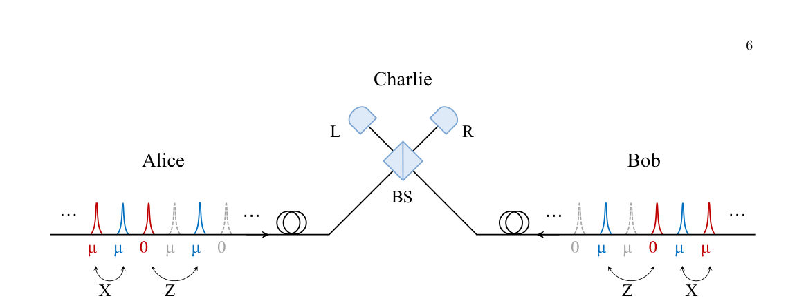
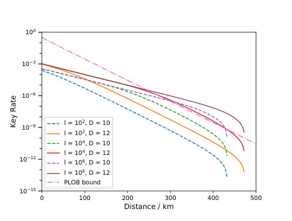
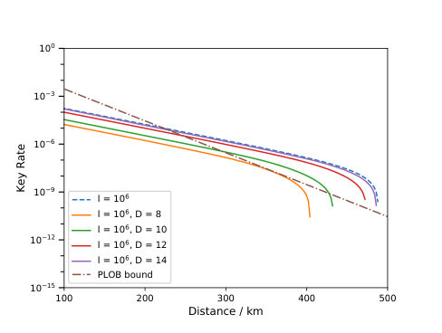
Summary. This paper introduces a quantum key distribution protocol that uses discrete rather than continuous phase randomization. It proves that a small number of discrete phases (around 14) are sufficient to match the performance of the ideal case while significantly reducing the required randomness.
Why it may be interesting. This paper is highly relevant to quantum optics and quantum information as it addresses the practical implementation of quantum communication protocols by bridging the gap between idealized continuous-variable models and realistic discrete-variable hardware.
Main problem. The existing mode-pairing QKD protocol relies on an experimentally infeasible assumption of continuous phase randomization, which also requires an impractical, infinite supply of random bits.
Main result. The authors propose a discrete-phase-randomized (DPR) protocol that achieves security using only a few random bits and demonstrates that performance converges to the continuous case with as few as 14 discrete phases.
Method. The study uses a mathematical framework of pseudo k-photon states, fidelity-based error estimation, and a discrete version of the decoy-state method to bound phase error rates.
Model / system. A Measurement-Device-Independent (MDI) QKD setup involving two parties (Alice and Bob) and an untrusted third party (Charlie) using coherent state light sources with discretized phases.
Key observables. Key rate, Quantum Bit Error Rate (QBER), yield of pseudo single-photon states, and fidelity between bases.
Important parameters / regimes. Number of discrete phases (D), pairing interval (l), intensity (mu, nu), and transmission distance.
Assumptions / limitations. Assumes an even number of discrete phases, uniform probability for phase selection, and a symmetrically attenuating channel.
Figures summary. Figure 1 shows the protocol schematic; Figure 2 plots the key rate versus distance for various D values compared to the PLOB bound.
Paper structure. The paper introduces the security vulnerability of continuous phase randomization, proposes the DPR-MP-QKD protocol, develops the mathematical framework for security analysis using fidelity and decoy states, and concludes with simulation results showing convergence and resource efficiency.
Mode-pairing quantum key distribution (MP-QKD) protocol achieves performance beyond the repeaterless rate-transmittance bound and exhibits excellent practicality by avoiding the requirement for difficult global phase locking. However, the source side of MP-QKD still relies on the assumption of continuous phase randomization, an experimentally infeasible requirement in practice. Therefore, the practical security of the protocol cannot be fully guaranteed. In this work, we propose a discrete-phase-randomized mode-pairing quantum key distribution (DPR-MP-QKD) protocol and analyze the basis-dependence of the source side. Then, we introduce a concrete discrete version of the decoy state method that ensures the security of the DPR-MP-QKD protocol. Finally, simulation results indicate that as the number of discrete phases increases, the key rate performance of DPR-MP-QKD progressively approaches that of the continuous case, with convergence achieved at approximately 14 discrete phases. Moreover, our approach drastically lowers the demand for randomness. While conventional continuous phase randomization demands an unlimited supply of random bits, we show that merely a few bits (e.g., 4) are adequate.
Authors: Lei Zhang
Type: theory · Category: quantum information and computing · PDF: https://arxiv.org/pdf/2605.14219v1
Analysis basis: full PDF text, analyzed in chunks
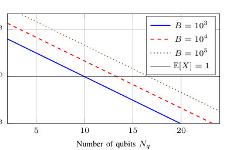
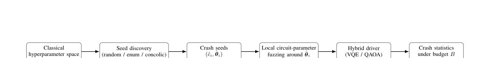
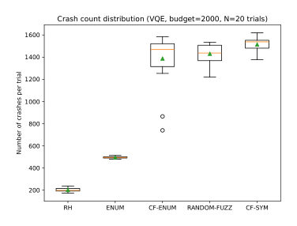
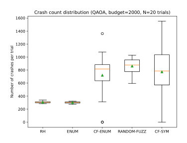
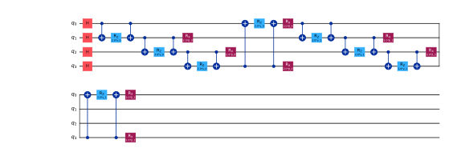
Summary. This paper proposes a new testing framework for hybrid quantum-classical algorithms that uses previously discovered failures to guide the search for new errors. By fuzzing quantum parameters around known non-convergent points, the method significantly improves the efficiency of finding bugs compared to random sampling.
Why it may be interesting. not directly relevant
Main problem. Testing hybrid quantum-classical (HQC) algorithms like VQE and QAOA is difficult because failures (non-convergence) are rare events that are hard to find within realistic execution budgets.
Main result. Failure-guided local fuzzing, which perturbs quantum circuit parameters around identified non-convergent seeds, is the primary driver of improvement over random testing, though the benefit of concolic seed discovery depends on the specific workload.
Method. A two-phase fuzzing strategy consisting of (1) seed discovery using random, enumerative, or concolic methods, and (2) local fuzzing by mutating quantum circuit parameters around those seeds.
Model / system. The study uses two hybrid quantum-classical workloads implemented in Qiskit: a 2-qubit Variational Quantum Eigensolver (VQE) and a 4-qubit Quantum Approximate Optimization Algorithm (QAOA) for the MaxCut problem on a ring graph.
Key observables. Crash count (number of non-convergence events) and crash rate (crashes per execution budget).
Important parameters / regimes. Number of qubits (Nq), execution budget (B), classical optimizer hyperparameters (learning rate, iteration limit), and quantum circuit parameters (rotation angles).
Assumptions / limitations. The study assumes noiseless simulators and focuses on a small-scale, discrete classical hyperparameter space for the concolic exploration component.
Figures summary. Figure 1 illustrates the exponential decay of expected crashes as qubits increase; Figure 2 shows the failure-guided fuzzing workflow; Figure 3 depicts the QAOA diagram; Figure 6 shows the distribution of crash counts for QAOA.
Paper structure. The paper introduces the testing challenge of HQC algorithms, defines the hybrid input model, proposes a two-phase failure-guided fuzzing strategy, compares five different testing strategies via VQE and QAOA case studies, and concludes with a discussion on workload dependency and future directions.
Hybrid quantum-classical (HQC) algorithms, such as the Variational Quantum Eigensolver (VQE) and the Quantum Approximate Optimization Algorithm (QAOA), are central to near-term quantum computing but remain challenging to test. Sampling-based fuzzing can expose faulty or non-convergent configurations, but under realistic execution budgets, it may miss failure-prone regions in the joint space of classical optimizer settings and quantum circuit parameters. This paper studies failure-guided fuzzing for HQC programs. It models a hybrid input as a pair of classical optimizer hyperparameters and quantum circuit parameters, and evaluates a two-phase strategy that first searches for non-convergent seeds and then locally fuzzes circuit parameters around those seeds. To understand where the gains come from, five budgeted strategies are compared: random hybrid testing, classical enumeration without fuzzing, random-seed local fuzzing, enumeration-seed local fuzzing, and concolic-seed local fuzzing. The study is implemented on a VQE instance and a QAOA MaxCut instance in Qiskit. The results show that failure-guided local fuzzing is the main driver of improvement over random testing, while concolic seed discovery provides additional benefits on VQE but is less stable on QAOA. These findings suggest that reusing failure information is a promising direction for HQC testing, but that the value of concolic seed discovery is workload-dependent.
Authors: Pok Man Tam, Yarden Sheffer, Xiao-Chuan Wu, F. D. M. Haldane, Shinsei Ryu
Type: theory · Category: strongly correlated electrons · PDF: https://arxiv.org/pdf/2605.13951v1
Analysis basis: full PDF text, analyzed in chunks
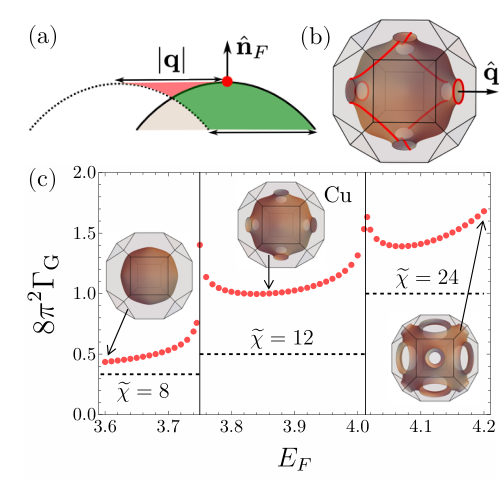
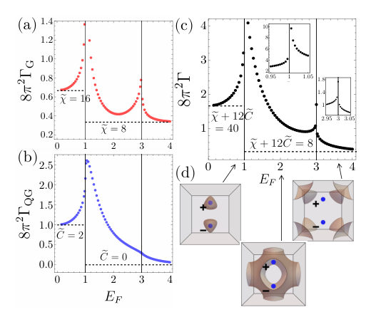
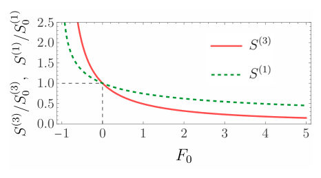
Summary. This paper demonstrates that the shape and quantum geometry of 3D Fermi surfaces are imprinted on the subleading logarithmic scaling of charge fluctuations. It provides a mathematical link between physical observables and topological invariants like the Euler characteristic and Chern number. This establishes a way to probe the complex geometry of multi-band metals through density-density correlations.
Why it may be interesting. not directly relevant
Main problem. The paper investigates how the geometric and quantum geometric properties of 3D Fermi surfaces are encoded in the subleading logarithmic term of bipartite charge fluctuations.
Main result. The authors establish that the logarithmic coefficient of charge fluctuations can be decomposed into a geometric part (related to the Euler characteristic and Will and Willmore energy) and a quantum geometric part (related to the quantum metric and Chern number), and they derive a topological lower bound for this coefficient.
Method. The study uses analytical expansions of the structure factor, differential geometry (curvature tensors, Gauss-Bonnet theorem), and the application of Wick's theorem and RPA to evaluate momentum-space integrals.
Model / system. The system consists of three-dimensional non-interacting multi-band metals and Landau Fermi liquids, including specific models like the copper Fermi surface and Weyl metals.
Key observables. Bipartite charge fluctuations, structure factor S(q) (specifically the |q|^3 coefficient), and the logarithmic scaling coefficient Gamma.
Important parameters / regimes. Fermi surface curvature, Euler characteristic, Chern number, quantum metric tensor, Willmore energy, and the Landau parameter F0.
Assumptions / limitations. The analysis assumes zero temperature, the thermodynamic limit, non-interacting or Landau Fermi liquid regimes, and that different Fermi surface components are separated and do not intersect.
Figures summary. Figure 1 visualizes the structure factor overcounting and critical lines on the copper Fermi surface; Figure 3 shows the dependence of structure factor coefficients on the Landau parameter F0.
Paper structure. The paper begins by defining the problem of encoding Fermi surface geometry in charge fluctuations, moves to the analytical derivation of the structure factor expansion, decomposes the logarithmic coefficient into geometric and quantum geometric parts, establishes topological bounds, and discusses implications for interacting Fermi liquids and Weyl systems.
For three-dimensional non-interacting multi-band metals, we show that important information about the shape and the quantum geometry of Fermi surfaces is encoded in the subleading logarithmic term of bipartite charge fluctuations. This logarithmic term is related to the dimensionless $|\mathbf{q}|^3$-coefficient of the structure factor in momentum space, and both quantities can be expressed as Fermi surface integrals of the Fermi surface curvature tensor and the quantum metric tensor. When the real-space partition surface is a quadric (i.e., sphere or ellipsoid), the logarithmic coefficient satisfies a topological bound depending only on the Euler characteristic and the Chern number of the Fermi surface, illustrating a non-trivial interplay between topology and quantum topology in multi-band metals.
Authors: Andrea Ladiana
Type: both · Category: disordered systems and neural networks · PDF: https://arxiv.org/pdf/2605.14059v1
Analysis basis: full PDF text, analyzed in chunks
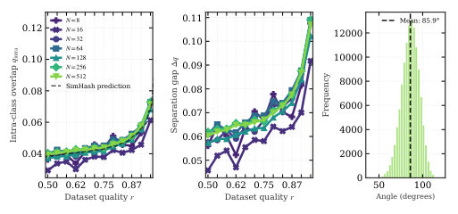
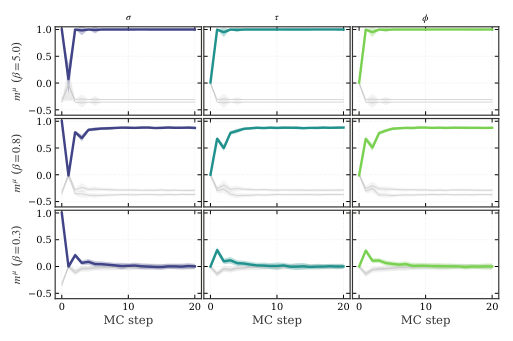
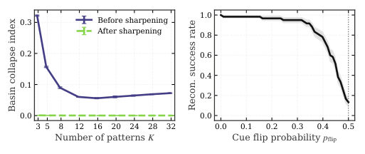
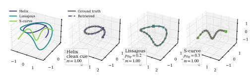
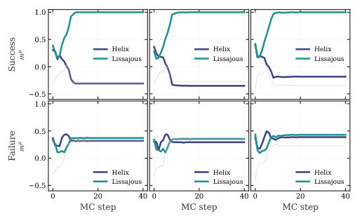
Summary. This paper develops a method to map continuous, real-world data into Ising spin systems for associative memory. It demonstrates that using pseudo-inverse couplings and specific update dynamics allows for robust pattern reconstruction and the ability to disentangle overlapping signals, even when applied to noisy biological EEG data.
Why it may be interesting. not directly relevant
Main problem. Bridging the gap between high-dimensional continuous signals and discrete Ising spin frameworks for associative memory, specifically addressing basin collapse and cross-modal retrieval.
Main result. The authors establish a multi-layer hetero-associative framework that achieves robust cross-modal reconstruction and spontaneous symmetry breaking, with an asymptotic storage capacity of approximately 0.50.
Method. A pipeline of PCA whitening and SimHash random-hyperplane projection is used to encode continuous signals into Ising spins, combined with Kanter-Sompolinsky pseudo-inverse couplings and Monte Carlo dynamics.
Model / system. A tri-layer hetero-associative Ising spin system where layers are coupled pairwise using pseudo-inverse memory couplings to decorrelate patterns and stabilize retrieval.
Key observables. Overlap (intra-class and inter-class), separation gap (delta q), Basin Collapse Index (BCI), Mattis magnetization, and storage capacity (alpha_c).
Important parameters / regimes. Inverse temperature (beta), spin dimension (N), loading parameter (alpha), Tikhonov regularization (gamma), and bit-flip noise rate (p_flip).
Assumptions / limitations. Assumes SimHash entries are i.i.d. Gaussian and that PCA whitening can be performed; assumes the ability to perform sign re-binarization.
Figures summary. Figures show magnetization dynamics, temperature-dependent phase diagrams, separation gaps between spin overlaps, and the reconstruction of sleep-state signatures from EEG/EOG data.
Paper structure. The paper introduces the interface problem, describes the multi-layer encoding and coupling architecture, presents analytical proofs for encoding fidelity and scaling, details numerical simulations on synthetic curves, and concludes with an experimental application to human sleep polysomnography.
Real-world physical signals are continuous and high-dimensional, yet the statistical-mechanics machinery of associative memory operates on discrete Ising spins. We bridge this divide through a multilayer Ising framework that couples a geometry-preserving continuous-to-Ising encoder (PCA whitening composed with SimHash random-hyperplane projection) to Kanter-Sompolinsky pseudo-inverse memory couplings, embedded directly into the local-field equations of a tri-layer hetero-associative system. The pseudo-inverse correction renders the equal-weight mixture state thermodynamically unstable, so that thermal fluctuations break the cross-modal symmetry and select a single global winner. We further establish a dynamical duality: parallel (Little) updates are structurally required to ignite the cross-modal signal avalanche from a single cued layer, whereas sequential (Glauber) sweeps resolve symmetric superpositions. The operational storage capacity obeys the Amit-Gutfreund-Sompolinsky finite-size correction $α_c(N)=α_c(\infty)-c\,N^{-1/2}$, extrapolating to an asymptotic operational limit $α_c(\infty)\approx 0.50$ under macroscopic-basin retrieval. Applied to multi-channel sleep polysomnography (PhysioNet Sleep-EDF), the architecture reconstructs the macroscopic sleep state on parietal EEG and EOG axes from a single noisy frontal-EEG cue, demonstrating cross-modal recall in the presence of quenched biological disorder.
Authors: Gabriel Escrig, M. A. Martin-Delgado
Type: theory · Category: quantum information and computing · PDF: https://arxiv.org/pdf/2605.13980v1
Analysis basis: full PDF text, analyzed in chunks
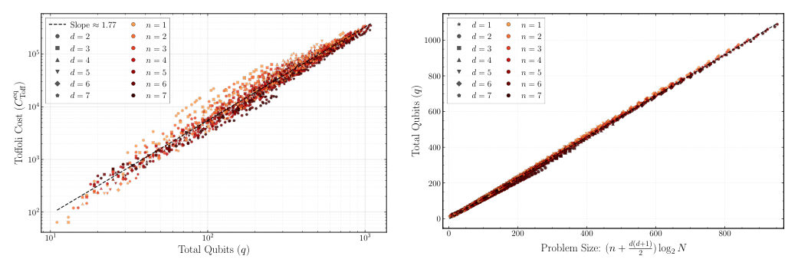
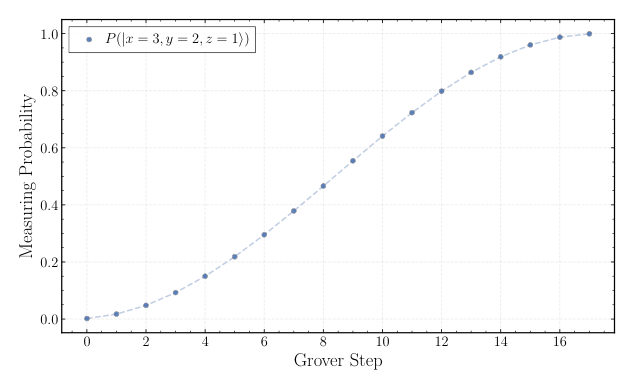
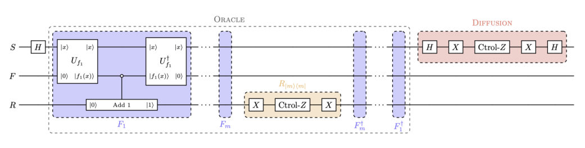
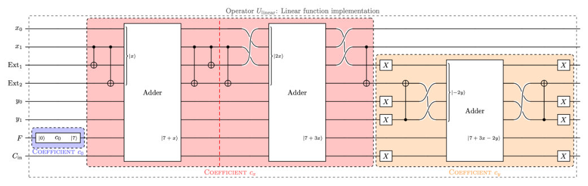
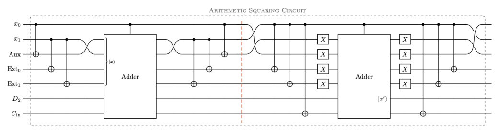
Summary. This paper presents a concrete quantum architectural design for solving polynomial equations over integers. By explicitly synthesizing the arithmetic gates required for the oracle, the authors prove that the quantum advantage is preserved and that the computational overhead remains polynomially bounded. This provides a scalable blueprint for applying Grover-type searches to integer optimization and cryptographic problems.
Why it may be interesting. not directly relevant
Main problem. The computational intractability of solving bounded Diophantine systems (polynomial equations over integers) and the need for an explicit, resource-efficient quantum oracle that avoids the 'black-box' assumption.
Main result. The authors provide a gate-level synthesis of a reversible quantum arithmetic oracle that achieves a quadratic speedup over classical search while maintaining polynomial overhead in terms of qubit and gate complexity.
Method. A 'compute-utilize-uncompute' architecture using Grover's algorithm, two's complement arithmetic, and a shift-and-add engine for polynomial evaluation.
Model / system. A digital quantum computing framework operating on a bounded integer domain D = [-N/2, N/2 - 1]^n, utilizing quantum registers for system variables, function accumulation, and result counting.
Key observables. Toffoli gate count, qubit requirements (spatial complexity), and amplitude amplification probability dynamics.
Important parameters / regimes. Number of variables (n), maximum polynomial degree (d), interval length (N), and Hamming weight of coefficients (w_H).
Assumptions / limitations. The problem is restricted to bounded (decidable) Diophantine systems; the analysis focuses on the pre-asymptotic regime; the architecture assumes two's complement binary encoding.
Figures summary. Figure 1 shows scaling of gate counts and qubits; Figure 2 displays amplitude amplification success probability; Figure 3 shows the Grover iteration schematic; Figure 4 and 5 illustrate specific arithmetic circuit implementations (rewiring and squaring); Figure 6 and 7 show gate complexity scaling with respect to qubits, equations, and variables.
Paper structure. The paper begins with the mathematical definition of Diophantine systems, moves to the construction of a reversible arithmetic engine, details the gate-level synthesis of linear and quadratic oracles, provides a complexity analysis proving the preservation of quantum speedup, and concludes with empirical validation via state-vector simulations.
Solving non-linear Diophantine systems lies at the mathematical core of integer optimization and cryptography. While the general unbounded problem is undecidable, even over bounded integer domains it remains classically intractable in the worst case. In this work, we introduce a fully reversible quantum algorithmic framework tailored to solve arbitrary polynomial Diophantine equations over bounded integer domains. The core of our approach is the explicit, gate-level synthesis of an evaluation oracle for amplitude amplification. By coherently evaluating polynomial constraints via in-place two's complement arithmetic and routing operations into a single recycled accumulator, this garbage-free strategy achieves a compact and scalable synthesis of the underlying non-linear arithmetic. Through analytical derivations and empirical circuit simulations, we prove that the overall spatial complexity is bounded by $q = \mathcal{O}((n + d^2)\log_2 N)$ logical qubits for $n$ variables, maximum degree $d$, and interval length $N$. The non-Clifford Toffoli depth is upper-bounded by $\mathcal{O}(q^2)$. This structural scaling exponent remains invariant to the variable count, modulated linearly only by the coefficients' Hamming weights. By moving beyond abstract black-box assumptions, this explicit architectural synthesis guarantees that the necessary quantum arithmetic acts as a bounded polynomial overhead. This ensures a quadratic speedup over classical exhaustive search, whether retrieving a unique assignment or dynamically enumerating an unknown number of solutions.
Authors: Dichuan Gao, Razin A. Shaikh, Aleks Kissinger
Type: theory · Category: quantum information and computing · PDF: https://arxiv.org/pdf/2605.13993v1
Analysis basis: full PDF text, analyzed in chunks
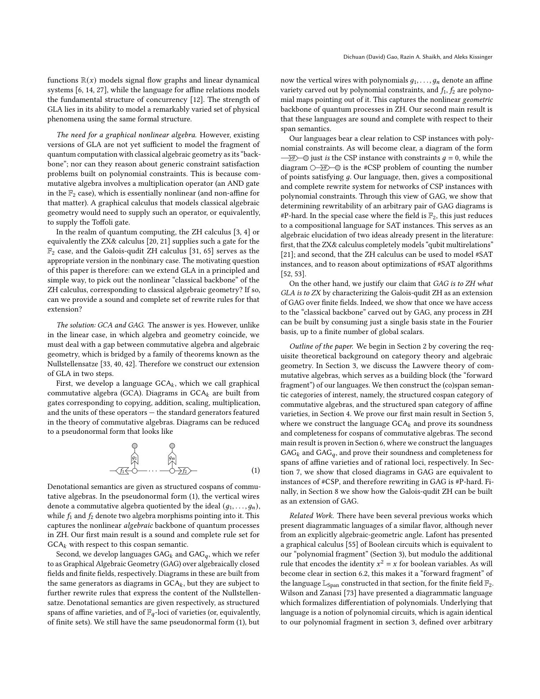
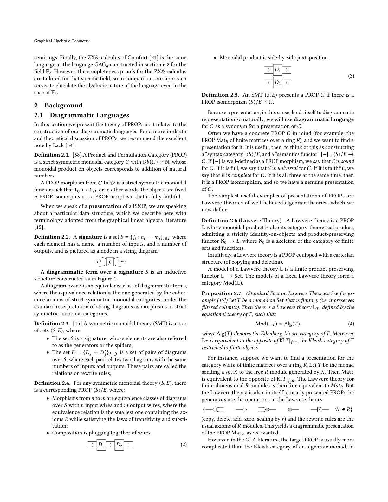
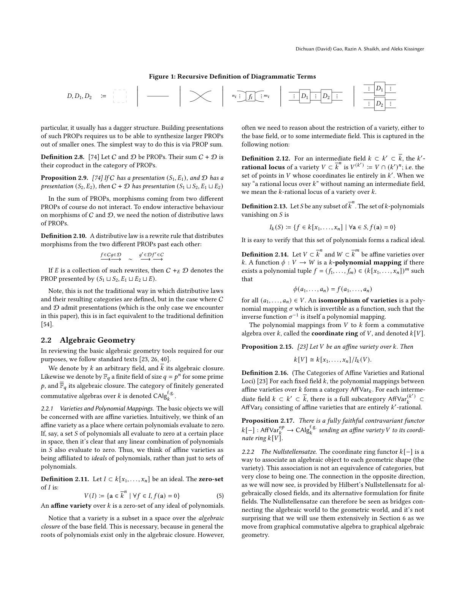
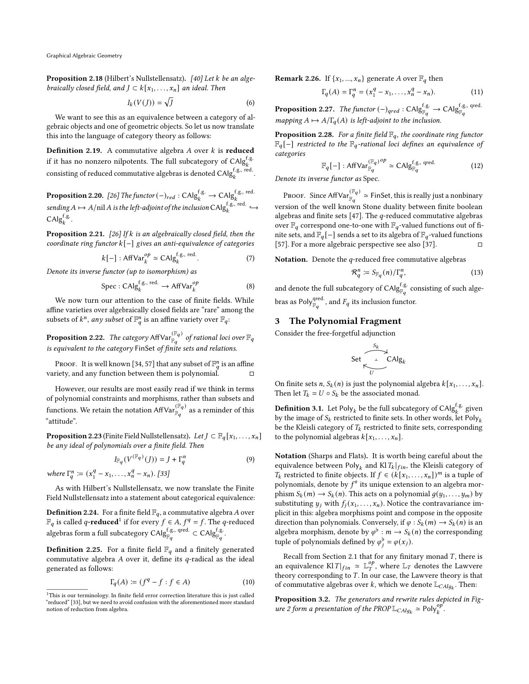
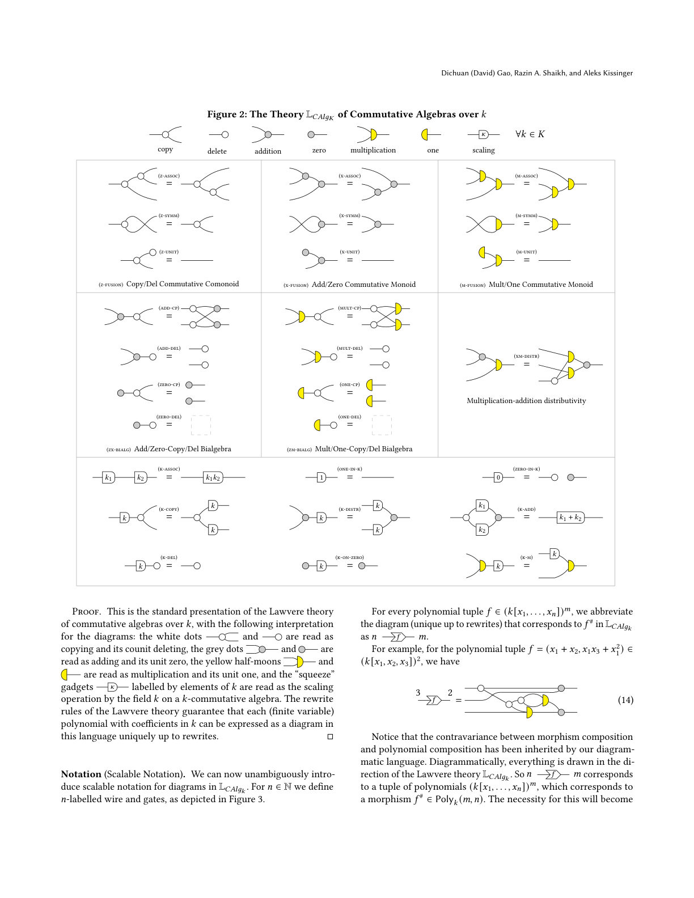
Summary. The paper introduces Graphical Algebraic Geometry (GAG), a new family of diagrammatic languages for reasoning about commutative algebras and affine varieties. It establishes a formal link between GAG and the ZH quantum calculus, showing that the latter is an extension of the former. The work also demonstrates that rewriting in GAG is #P-hard, as it can represent counting constraint satisfaction problems.
Why it may be interesting. This is highly relevant for researchers working on quantum circuit simplification and the development of new diagrammatic calculi, as it provides a rigorous algebraic-geometric foundation for the ZH calculus and links quantum computation to classical polynomial constraint satisfaction.
Main problem. The paper addresses the need for a graphical calculus capable of modeling the nonlinear classical backbone of quantum computation, specifically for the ZH calculus and polynomial constraint satisfaction problems.
Main result. The authors introduce Graphical Algebraic Geometry (GAG), proving it is a sound, universal, and complete diagrammatic language for commutative algebras and affine varieties, and establish that the ZH quantum calculus is an extension of GAG.
Method. The researchers use category theory (PROPs, Lawvere theories, and structured spans/cospans) to construct the language and employ structural induction and complexity analysis to prove completeness and #P-hardness.
Model / system. The framework models algebraic structures such as commutative algebras, ideals, and affine varieties, and specifically relates these to the ZH calculus, a diagrammatic language for qudit quantum computation.
Important parameters / regimes. The order of the finite field q, and the dimension of the polynomial rings and varieties.
Assumptions / limitations. The construction relies on the Noetherian property of polynomial rings and assumes the field k is either algebraically closed or finite for certain categorical equivalences.
Figures summary. Figure 1 shows the recursive definition of diagrammatic terms; Figure 2 presents the generators and rewrite rules of the Lawvere theory; Figure 3 and 4 illustrate scalable notation for polynomial operations; Figure 5 displays additional rewrite rules for GCA_k.
Paper structure. The paper introduces the GAG framework, constructs the GCA, GAG_k, and GAG_q languages, proves their soundness and completeness using category theory, demonstrates the connection to #CSP complexity, and finally characterizes the ZH calculus as an extension of GAG.
We introduce Graphical Algebraic Geometry (GAG), a family of diagrammatic languages extending the Graphical Linear Algebra programme. We construct several languages within this family and prove that they are universal and complete for the corresponding (co)span semantics of commutative algebras and affine varieties. This framework provides clear graphical representations of algebraic structures -- such as polynomials, ideals, and varieties -- enabling intuitive yet rigorous diagrammatic reasoning. We showcase two practical viewpoints on GAG. First, we show that instances of counting constraint satisfaction problem (#CSP) are recast as rewrite problems of closed diagrams in GAG. This means that deciding rewritability in GAG is #P-hard, and GAG can be viewed as a complete and compositional rewrite system for networks of polynomial constraints. Second, we characterize the qudit ZH calculus, a diagrammatic language for quantum computation, as an extension of Graphical Algebraic Geometry. This establishes the correspondence that Graphical Algebraic Geometry is to the ZH calculus what Graphical Linear Algebra is to the ZX calculus. Using this construction, we show that computing amplitudes in qudit ZH requires only a constant number of queries to a GAG oracle.
Authors: Guillermo Arias-Tamargo, Philip Boyle Smith, Rishi Mouland, Maxwell L. Velásquez Cotini Hutt
Type: theory · Category: strongly correlated electrons · PDF: https://arxiv.org/pdf/2605.13952v1
Analysis basis: full PDF text, analyzed in chunks
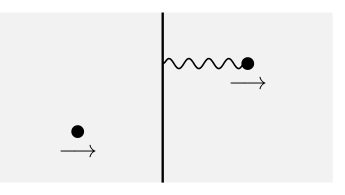
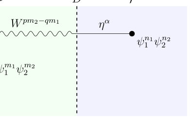
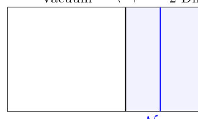
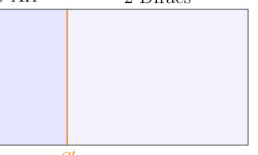
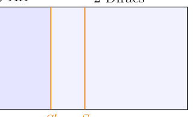
Summary. This paper classifies the non-invertible symmetries and boundary conditions for 2D fermionic systems. It establishes a deep connection between number theory (Pythagorean triples) and the existence of topological defects and symmetric boundaries in conformal field theories.
Why it may be interesting. not directly relevant
Main problem. The paper investigates the relationship between boundary conditions and non-invertible (categorical) symmetries in 2D fermionic Conformal Field Theories (CFTs). Specifically, it seeks to classify anomaly-free invertible symmetries and their associated non-invertible topological defects.
Main result. The authors identify all anomaly-free invertible symmetries of two free complex Weyl fermions as cyclic groups Z_k related to primitive Pythagorean triples, and show that the theory is self-dual under gauging these symmetries. They further demonstrate that all U(1)^2 symmetric conformal boundary conditions for two Dirac fermions can be constructed by dressing a Dirichlet boundary with these non-invertible lines.
Method. The study employs modular transformation analysis of partition functions, symmetry gauging, and number-theoretic classification using Gaussian integers and Pythagorean triples. Microscopic realizations are provided via fermion-rotor coupling and Abelian gauge theories implementing symmetric mass generation.
Model / system. The primary system is a 2D Conformal Field Theory consisting of two free complex Weyl fermions. The study also considers two Dirac fermions on a manifold with a boundary (half-line).
Key observables. Partition functions in different spin structures (NS-NS, R-NS, NS-R, R-R), central charge, and scaling dimensions of operators.
Important parameters / regimes. The integer k = p^2 + q^2 (from coprime integers p and q), the gauging parameter t, and the mass parameters for the fermions.
Assumptions / limitations. The symmetries considered are assumed to be faithful, discrete, and invertible 0-form symmetries.
Figures summary. Figure 1 illustrates the relationship between boundary conditions and non-invertible lines; Figure 2 shows modular S and T transformations for different spin structures; Figure 11 and 14 depict interfaces and boundary conditions involving Majorana modes.
Paper structure. The paper begins by classifying anomaly-free invertible symmetries, moves to demonstrating the self-duality of the theory under gauging these symmetries, then constructs non-invertible defects and uses them to define conformal boundary conditions, and concludes with microscopic UV realizations.
We study the relation between boundary conditions and categorical symmetries of two-dimensional fermionic conformal field theories. We determine all anomaly-free invertible global symmetries of two free complex Weyl fermions, which take the form $\mathbb{Z}_k$ for each primitive Pythagorean triple $a^2 + b^2 = k^2$. The theory is self-dual under gauging any of these symmetries, and so to each there is associated a non-invertible topological defect. We study the properties of these lines, and show that any conformal boundary condition of two Dirac fermions that preserves a $U(1)^2$ symmetry can be found by dressing a trivial Dirichlet boundary with one of them. We discuss two microscopic descriptions of these defects: fermions coupled to a quantum-mechanical rotor degree of freedom; and an abelian gauge theory that realises symmetric mass generation in a half-space.
Authors: Arist Zhenyuan Yang
Type: theory · Category: strongly correlated electrons · PDF: https://arxiv.org/pdf/2605.14969v1
Analysis basis: full PDF text, analyzed in chunks
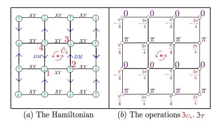
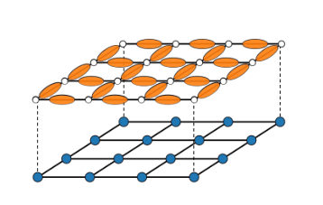
Summary. This paper proposes a new theoretical framework called twisted Spin-Space Groups to accurately describe the symmetries of anisotropic magnetic systems. It reveals that these 'twisted' symmetries can create exotic topological excitations on non-orientable manifolds like the Klein bottle.
Why it may be interesting. not directly relevant
Main problem. The paper addresses the inadequacy of conventional spin-space group (SSG) frameworks in describing anisotropic spin interactions, which do not merely break symmetries but 'twist' them through cohomology invariants.
Main result. The authors develop a twisted Spin-Space Group (tSSG) theory and demonstrate that this leads to topological quadrupolar excitations on a spin Brillouin Klein-bottle, characterized by a Z2 invariant and Mobius boundary states.
Method. The study utilizes group extension theory and cohomology invariants to classify symmetries, combined with linear flavor wave theory and Bogoliubov-de Gennes formalism to analyze the bosonic spectrum.
Model / system. A two-dimensional spin-1 model on a square lattice featuring anisotropic exchange interactions (including Dzyaloshinskii-Moriya and XY components) and single-ion anisotropy.
Key observables. Bosonic excitation branches, edge mode energies, decay factor, and a Z2 topological invariant.
Important parameters / regimes. Single-ion anisotropy (D), exchange anisotropy parameters (a, b, c, lambda, alpha, beta, gamma), and the large-D ferroquadrupolar limit.
Assumptions / limitations. The analysis assumes the lattice symmetry group contains a C4 cyclic subgroup and focuses on the large-D limit for the ground state vacuum.
Figures summary. Figure 1 illustrates the Hamiltonian components, including the AFM background field, and visualizes the site-dependent spin operations associated with C4 rotation and time-reversal symmetry.
Paper structure. The paper introduces the problem of symmetry breaking vs. twisting, develops the mathematical framework for tSSG using group cohomology, applies this to a specific spin-1 model, and concludes with the topological implications for excitations.
We show that anisotropic spin interactions do not merely break spin-space group (SSG) symmetries, but instead twist them through cohomology invariants, yielding symmetry classes beyond subgroups of $O(3)\times \operatorname{Isom}(\mathbb{R}^3) $. This requires redefining the spin-only group $S_0$ in terms of proper spin rotations. Based on this unitary $S_0$, we formulate a twisted SSG (tSSG) theory that captures the complete set of spin-space symmetries. We then study a spin-1 model with tSSG symmetry using linear flavor wave theory and find topological quadrupolar excitations defined on a spin Brillouin Klein-bottle rather than the conventional torus. Specifically, the bosonic BdG Hamiltonian satisfies a glide reflection sewing relation, the ribbon spectrum exhibits Möbius boundary states. These topological excitations are classified by $ \mathbb{Z}_2 $, enforced by the nonorientability of the Klein-bottle.
Authors: C. A. S. Almeida
Type: theory · Category: other · PDF: https://arxiv.org/pdf/2605.14148v1
Analysis basis: full PDF text, analyzed in chunks
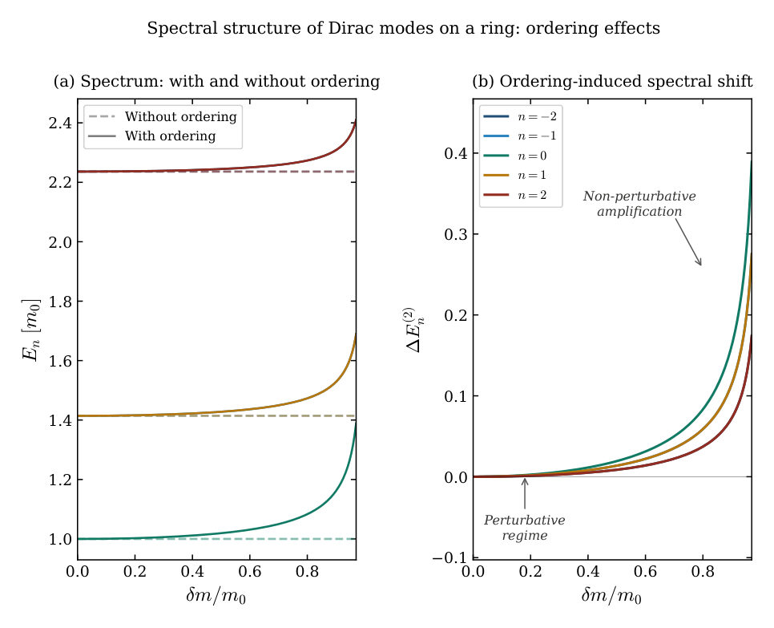
Summary. This paper demonstrates that the requirement for probability-current conservation in relativistic systems uniquely fixes the operator ordering for spatially varying mass. This fixed ordering acts as an emergent geometric background that causes measurable shifts in the energy spectra of Dirac particles.
Why it may be interesting. not directly relevant
Main problem. The paper addresses the ambiguity of operator ordering in the Dirac Hamiltonian when mass varies spatially, specifically investigating if the unique ordering required for probability-current conservation leads to observable spectral effects.
Main result. The study finds that the required Hermitian ordering introduces an effective geometric connection that induces a universal, second-order spectral shift, which becomes strongly enhanced near the mass-inversion threshold.
Method. The authors use analytical derivation based on Hermiticity and current conservation requirements, combined with second-order perturbation theory and explicit computation in a 1D ring geometry.
Model / system. A single-particle Dirac field coupled to a spatially varying scalar mass profile m(x), with specific analysis applied to a 1D ring with angular mass modulation.
Key observables. Probability current, spectral quantization condition, energy level shifts, and the effective geometric connection (holonomy).
Important parameters / regimes. Logarithmic gradient of the mass profile, mass-inversion threshold, modulation amplitude (epsilon), and the geometric scale (grad m / m).
Assumptions / limitations. The mass profile is assumed to be smooth, single-valued, and periodic; the derivation focuses on the single-particle Hamiltonian.
Figures summary. Figure 1(a) shows the evolution of energy levels (En) as a function of the mass modulation amplitude (delta m/m0).
Paper structure. The paper identifies the problem of operator ordering ambiguity, derives the unique Hermitian Hamiltonian required for current conservation, compares the relativistic case to the non-relativistic case, and then provides analytical results for spectral shifts in a ring geometry.
We investigate the spectral consequences of the uniquely determined Hermitian ordering of the Dirac Hamiltonian with spatially varying mass. In contrast to the nonrelativistic case, where continuous families of admissible prescriptions exist, the relativistic Dirac operator admits a single consistent ordering compatible with probability-current conservation. This requirement generates an additional logarithmic-gradient term proportional to the spatial variation of the mass profile. We show that this contribution modifies the effective kinetic operator and induces a universal deformation of the spectral quantization condition. In compact geometry, an explicit analytic computation reveals a mode-dependent second-order spectral shift that becomes strongly enhanced near the mass-inversion threshold. These results demonstrate that the consistent relativistic ordering of the Dirac operator leads to observable modifications of discrete spectra in spatially inhomogeneous scalar backgrounds.
Authors: Allan John Gerrard, Ryo Asaka, Kazumitsu Sakai
Type: theory · Category: quantum information and computing · PDF: https://arxiv.org/pdf/2605.14640v1
Analysis basis: full PDF text, analyzed in chunks
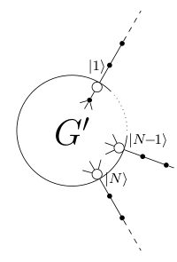
Summary. The paper develops a method to design quantum graphs with specific scattering properties by decomposing them into simpler components. By mapping transmission conditions to a geometric vector-sum problem, the authors show how to construct complex networks that act as perfect momentum filters or phase gates.
Why it may be interesting. This work provides a systematic, modular approach to designing quantum networks and gates by treating complex graph structures as combinations of simple, additive building blocks.
Main problem. The challenge of constructing finite graphs with prescribed scattering properties, such as perfect transmission or specific phase gates, for continuous-time quantum walks.
Main result. The authors introduce three additive quantities (mu1, mu2, and nu) that transform the search for specific transmission properties into a geometric vector-sum problem in a (mu, nu)-plane.
Method. The study uses the S-matrix formalism, Schur complements, and characteristic polynomials of graphs and their subgraphs, alongside a parallel composition rule for graph building.
Model / system. Continuous-time quantum walks on finite, edge-weighted graphs connected to two semi-infinite paths (leads), where the Hamiltonian is the adjacency matrix of the infinite graph.
Key observables. S-matrix elements (reflection and transmission amplitudes), transmission probability, transmission phase, and effective length.
Important parameters / regimes. Momentum (k), edge weights (omega), and the admittance-like parameters (mu1, mu2, nu).
Assumptions / limitations. The graph G is assumed to be connected; the edge weights are real-weighted for the geometric construction.
Figures summary. Figure 1 shows the process of extending a graph up a lead; Figure 2 illustrates graph extension; Figure 3 visualizes the vector sum of paths landing on a hyperbola; Figure 4 shows a specific vector sum achieving perfect transmission; Figure 5 illustrates a phase gate setup.
Paper structure. The paper begins by defining the scattering problem and S-matrix in terms of graph polynomials, introduces the additive mu-nu parameters for parallel composition, provides a geometric framework for finding perfect transmission, and concludes with practical examples of constructing phase gates and calculating effective lengths.
We study scattering for continuous-time quantum walks on finite graphs with two attached leads. We derive explicit formulae for the two-terminal scattering matrix in terms of characteristic polynomials of the finite graph and its vertex-deleted subgraphs. For real-weighted two-terminal graphs, we then introduce three real quantities, $μ_1$, $μ_2$, and $ν$, which are each additive under parallel composition of graphs. In these variables, perfect transmission at fixed momentum is characterized by the condition $μ_1=μ_2$ together with a hyperbola in the corresponding $(μ,ν)$-plane, whose points determine the transmission phase. This turns the search for graphs with prescribed transmission properties into a geometric vector-sum problem for smaller building blocks.
Authors: Van-Quang-Huy Nguyen, Hoang-Quan Nguyen, Samee U. Khan, Ilya Safro, Khoa Luu
Type: both · Category: quantum information and computing · PDF: https://arxiv.org/pdf/2605.14001v1
Analysis basis: full PDF text, analyzed in chunks
Summary. This paper introduces QUACOD, a new hybrid quantum-classical algorithm designed to tackle large-scale optimization problems like drone scheduling. By using coordinate descent to break down complex problems into smaller, qubit-manageable subproblems, it achieves significantly better scalability and performance on NISQ-era hardware compared to existing methods.
Why it may be interesting. not directly relevant
Main problem. The challenge of solving large-scale, NP-hard drone scheduling problems on NISQ-era hardware, which lacks the necessary qubit count and quality for direct optimization.
Main result. The QUACOD algorithm outperforms the previous state-of-the-art (QUADRO) in both solution quality and scalability, handling up to 5 times more drones and 35 times more routes.
Method. A hybrid quantum-classical approach using Coordinate Descent to decompose large problems into smaller subproblems, which are then optimized using Variational Quantum Algorithms (VQE or QAOA) with hardware-efficient circuits.
Model / system. The problem is modeled as a Quadratic Unconstrained Binary Optimization (QUBO) problem, which is mathematically equivalent to finding the ground state of an Ising model Hamiltonian.
Key observables. Drone completion times (makespan) and the objective function value during the optimization process.
Important parameters / regimes. Number of drones (q), number of routes (n), recharging time (c), number of available qubits (m), and the penalty parameter (p).
Assumptions / limitations. Drones are assumed to be identical, routes are pre-determined, and the model does not account for heterogeneous vehicle fleets or complex real-world logistics.
Figures summary. Fig 1 shows the drone scheduling problem; Fig 2 depicts the hybrid quantum-classical loop; Fig 3 illustrates the heuristic for minimizing completion time; Fig 4 shows the hardware-efficient ansatz; Fig 5 shows the convergence of the objective function.
Paper structure. The paper introduces the drone scheduling problem, presents the QUACOD algorithm based on coordinate descent, describes the QUBO reformulation and VQE implementation, details the experimental setup and benchmarks against QUADRO, and concludes with scalability results and limitations.
Quantum computing has demonstrated its potential to solve various optimization problems, including drone scheduling, which is important not only for drone delivery but also for logistics in general. However, one of the main obstacles is that practical drone scheduling settings typically require quantum resources that current hardware cannot provide. Therefore, in this work, we introduce a new Quantum Optimization via Coordinate Descent (QUACOD) approach to address this problem under the constraint of a limited number of available qubits. By leveraging coordinate descent, QUACOD decomposes the original high-complexity problem into multiple subproblems, which are then solved using quantum optimization. In our experiments, QUACOD outperforms the state-of-the-art (SOTA) quantum-based drone scheduling method not only in optimized drone completion times but also in scalability, handling up to 5 times more drones and 35 times more routes. In addition, QUACOD demonstrates that hardware-efficient circuits are effective for optimization problems. Together, these contributions advance quantum computing toward practical applications in the noisy intermediate-scale quantum (NISQ) era.
Authors: Rejaul SK, Hanning Zhang, Artem K Grebenko, Arsen Herasymchuk, Ranjith Shivajirao, Hongji Zhang, Abee Nelson, Zheng Jue Tong, Gagandeep Singh, Naoto Kimiuchi, Yuta Sato, Kazutomo Suenaga, Chee Tat Toh, Rudolf A Romer, Shaffique Adam, Oleg V. Yazyev, Barbaros Ozyilmaz, Bent Weber
Type: both · Category: disordered systems and neural networks · PDF: https://arxiv.org/pdf/2605.14349v1
Analysis basis: full PDF text, analyzed in chunks
Summary. This paper demonstrates that monolayer amorphous carbon hosts scale-invariant, critical-like electronic states despite being a strictly 2D disordered system. This phenomenon is attributed to an emergent chiral symmetry protected by the topological disorder of the carbon network. The findings challenge the conventional view that all states in 2D are localized by weak disorder.
Why it may be interesting. not directly relevant
Main problem. The study investigates the nature of electronic localization in a strictly 2D amorphous system and whether topological disorder can prevent Anderson localization at the band center.
Main result. The authors discover that monolayer amorphous carbon (MAC) exhibits critical-like extended states near the band center, protected from localization by an emergent chiral symmetry described by a Wess-Zumino-Witten topological term.
Method. The researchers combined experimental Scanning Tunneling Microscopy (STM/STS) and High-Resolution TEM with atomistic tight-binding simulations and multifractal analysis.
Model / system. The system is Monolayer Amorphous Carbon (MAC), a 2D continuous random network of sp2-bonded carbon characterized by topological disorder (5-8 membered rings) and a lack of long-range translational symmetry.
Key observables. Local Density of States (LDOS) distributions, multifractal singularity spectrum f(alpha), anomalous scaling dimension Delta q, and localization length xi(E).
Important parameters / regimes. Energy near the band center (E ~ 0), critical exponent nu approx 0.90, and the scaling relation eta = -Delta2.
Assumptions / limitations. The study assumes the disorder is primarily topological (bond-length/angle variations) rather than random on-site potentials, and proposes a WZW topological term in the effective field theory.
Figures summary. Figure 1 compares LDOS maps and structural disorder in graphene vs MAC, showing non-periodic modulations and non-hexagonal rings. Figure 2 demonstrates the transition from Gaussian to log-normal LDOS distributions.
Paper structure. The paper introduces the problem of 2D localization, presents structural and electronic characterization of MAC via STM/TEM, details the multifractal and scaling analysis of wavefunctions, provides theoretical validation via tight-binding simulations, and concludes with a proposed topological mechanism for the observed criticality.
Amorphous solids represent the extreme limit of broken translational symmetry, in which the absence of long-range order removes well-defined crystal momenta and invalidates the Bloch description of electronic states. Monolayer amorphous carbon (MAC) has emerged as a unique realization of a strictly two-dimensional (2D) amorphous lattice defined by a structurally contiguous but topologically disordered $sp^2$-bonded random network devoid of any defined long-range crystal symmetry. From atomic-resolution measurements of multifractal wavefunctions, we show that disorder in MAC effectively localizes the low-energy part of the electronic spectrum but retains an extended critical-like state near the band centre ($E\sim 0$). We conjecture that this state is protected from topological disorder by remnant chiral symmetry surviving within the continuous random network, described by a Wess-Zumino-Witten (WZW) topological term. Near criticality, we verify the multifractal scaling relation $η= -Δ_2$, providing quantitative agreement between independently measured spatial correlation decay and multifractal scaling exponents. Our results are confirmed by atomistic tight-binding calculations that closely mirror the multifractal scaling near $E\sim 0$. Our results establish MAC as the first strictly 2D amorphous electronic system to exhibit Anderson criticality driven purely by topological disorder
Authors: Mathias Pelz, Gabriel Kotliar, Jan von Delft, Andreas Gleis
Type: theory · Category: strongly correlated electrons · PDF: https://arxiv.org/pdf/2605.15059v1
Analysis basis: full PDF text, analyzed in chunks
Summary. This paper demonstrates that the transition between the pseudogap metal and the Fermi liquid in the 2D Hubbard model is a continuous quantum phase transition. It shows that this transition is momentum-selective, leading to the formation of Fermi arcs as the antinodal spectral weight is suppressed. The findings provide a theoretical basis for understanding the non-Fermi-liquid behavior seen in cuprate superconductors.
Why it may be interesting. not directly relevant
Main problem. Determining the nature of the normal-state phase diagram in the 2D Hubbard model, specifically whether a quantum critical point (QCP) separates the pseudogap metal from the overdoped Fermi liquid.
Main result. The study identifies a continuous quantum phase transition at a critical doping p* = 0.14, characterized by the collapse of the Fermi-liquid scale and the emergence of momentum-selective Fermi arcs.
Method. The researchers used the Dynamical Cluster Approximation (DCA) combined with the Numerical Renormalability Group (NRG) as a cluster solver to access real-frequency dynamics at zero temperature.
Model / system. A two-dimensional square-lattice Hubbard model with parameters U=7t and t'=-0.3t, representing a regime relevant to high-Tc cuprates.
Key observables. Dynamical susceptibilities (charge, spin, and d-wave pairing), spectral functions, quasiparticle weights (Z_K), and the Fermi-liquid scale (T_FL).
Important parameters / regimes. Doping (p), Hubbard interaction strength (U=7t), next-nearest-neighbor hopping (t'=-0.3t), and critical doping (p*=0.14).
Assumptions / limitations. Calculations are restricted to the normal state (excluding symmetry-broken solutions) and use a four-patch DCA cluster configuration.
Figures summary. Figure 1 shows the zero-temperature phase diagram and static susceptibility peaks; Figure 2 illustrates frequency-dependent susceptibility plateaus; Figure 3 displays cluster spectral functions and vanishing quasiparticle weights; Figure 5 quantifies spectral weight distribution along the Fermi surface.
Paper structure. The paper introduces the scientific problem of the pseudogap transition, details the DCA+NRG computational framework, presents the identified phase diagram and quantum criticality, analyzes momentum-dependent spectral evolution and Fermi arc formation, and concludes with discussion on the robustness of the results.
We study the normal-state, doping-driven phase diagram of the square-lattice Hubbard model using the dynamical cluster approximation combined with the numerical renormalization group as a cluster solver, which gives direct access to real-frequency dynamics at essentially zero temperature. In a parameter regime relevant for cuprates, $U=7t$ and $t'=-0.3t$, we find a critical doping $p^{\ast}$ that marks a continuous quantum phase transition between a pseudogap metal and a normal Fermi liquid. The transition is identified by a continuous collapse, from both sides, of the Fermi-liquid scale extracted from charge, spin, and $d_{x^2-y^2}$-wave pairing susceptibilities. This collapse produces a non-Fermi-liquid regime at intermediate energy scales, which appears to extend to arbitrarily low scales at $p^{\ast}$. As $p^{\ast}$ is crossed from the normal Fermi liquid at $p>p^{\ast}$ into the pseudogap metal at $p
Authors: Anna Zakharova
Type: theory · Category: other · PDF: https://arxiv.org/pdf/2605.15121v1
Analysis basis: full PDF text, analyzed in chunks
Summary. This paper provides a detailed theoretical calculation of the rovibrational spectrum and electric dipole moments of the AcOCH3+ ion. By using relativistic coupled cluster methods and a coupled channel technique, the study identifies key molecular properties essential for future experiments searching for parity and time-reversal symmetry violation.
Why it may be interesting. This work is highly relevant to AMO physics as it provides the necessary molecular spectroscopic data (dipole moments and energy levels) required to implement laser cooling and precision spectroscopy for testing fundamental symmetries.
Main problem. The study aims to investigate the rovibrational structure and electric dipole moments of the AcOCH3+ ion to support searches for fundamental parity (P) and time-reversal (T) symmetry violation.
Main result. The researchers computed vibrational frequencies and longitudinal electric dipole moments for various rovibrational states, finding that the longitudinal dipole moment behaves nearly linearly with the internuclear distance.
Method. Electronic structure was calculated using the relativistic coupled cluster method [CCSD(T)] via the DIRAC 19 program, while nuclear motion was treated using a coupled channel technique to account for all rovibrational effects and anharmonicities.
Model / system. The system is the AcOCH3+ molecular ion, modeled as a symmetric top molecule consisting of a linear rotor (Actinium atom and the center of mass of the OCH3 ligand) coupled to a rigid symmetric top representing the ligand.
Key observables. Vibrational frequencies, longitudinal electric dipole moments (d_parallel), and energy levels (E - E0).
Important parameters / regimes. l-doublets, K-doublets, equilibrium distance (Re), vibrational frequency (omega), and dissociation energy (De).
Assumptions / limitations. The variation of the potential with the angle phi is treated as a perturbation for most properties, and the radial coordinate is discretized using a harmonic approximation.
Figures summary. Figure 1 shows the molecular geometry; Figure 2 shows the adiabatic potential dependence on R; Figure 3 shows the phi-averaged adiabatic potential dependence on theta; Figure 4 shows the azimuthal dependence of the potential and wavefunction extent.
Paper structure. The paper introduces the motivation for P,T-violation searches, describes the molecular model and Hamiltonian, details the relativistic electronic structure and coupled channel methods, presents the calculated energy levels and dipole moments, and concludes with the results.
The possibility of laser cooling and the presence of closely spaced rovibrational doublets make polyatomic molecules an attractive platform for the $\mathcal{P}$, $\mathcal{T}$-violation searches. We study the spectrum of the lowest rovibrational state of the AcOCH$_3+$ symmetric top molecule. The electronic structure full-electron computation was performed within a relativistic coupled cluster method with double and perturbative triple excitations. The rovibrational wavefunctions are obtained using a coupled channel technique, taking into account all rovibrational effects and anharmonicities of the potential. As a result, the vibrational frequencies, as well as the values of the electric dipole moments for the rovibrational states, were computed.
Authors: Byungkyun Kang, Anderson Janotti, Dai Q. Ho, Myoung-Hwan Kim, Chul Hong Park, Sangkook Choi, Mark R. Pederson, Eunja Kim
Type: theory · Category: strongly correlated electrons · PDF: https://arxiv.org/pdf/2605.14248v1
Analysis basis: full PDF text, analyzed in chunks
Summary. This paper investigates why some altermagnetic candidates show suppressed spin-band splitting while others show pronounced features. It demonstrates that the competition between electron localization (driven by Hubbard U) and orbital hybridization (driven by ligand p-orbitals) is the decisive factor. These findings provide a roadmap for the rational design of new altermagnetic materials.
Why it may be interesting. not directly relevant
Main problem. Investigating the electronic origins of altermagnetism and determining how strong electron correlations and ligand hybridization influence the emergence or suppression of spin-band splitting.
Main result. The study finds that while strong correlations can suppress spin-band splitting by localizing electrons (as in MnF2), robust ligand hybridization can enable significant splitting (as in MnTe), establishing a design principle for new altermagnets.
Method. The authors use advanced many-body frameworks, primarily fully self-consistent GW plus extended dynamical mean-field theory (FGW+EDMFT), supplemented by DFT+DMFT and cRPA.
Model / system. The study analyzes three prototypical altermagnetic candidates: MnF2, MnTe, and RuO2, utilizing the single-band Hubbard model to describe the interplay between Coulomb repulsion (U) and hopping (t).
Key observables. Spin-band splitting, spin-resolved bandwidth, local magnetic moments, spectral functions, and Hubbard bands.
Important parameters / regimes. Hubbard interaction energy (U), hopping amplitude (t), U/t ratio, and hybridization function (Delta).
Assumptions / limitations. The analysis relies on the validity of the GW+EDMFT framework for capturing nonlocal screening and many-body effects in these specific transition metal oxides and fluorides.
Figures summary. Figure 1 provides a schematic of correlation and hybridization effects; Figure 2 shows the electronic structure and spectral functions of MnF2; Figure 3 presents spin-resolved spectral functions and local susceptibility for the three materials; Figure 4 visualizes ligand hybridization and orbital-projected DOS.
Paper structure. The paper introduces the problem of altermagnetic detection inconsistencies, presents a theoretical framework (FGW+EDMFT), analyzes three specific material cases (MnF2, MnTe, RuO2) to isolate the effects of correlation and hybridization, and concludes with design principles for future materials.
Spin-band splitting is a hallmark of altermagnetism, intrinsically linked to magnetic ordering driven by electron correlations. However, recent inconsistencies in the detection of altermagnetism in strongly correlated altermagnet candidates have cast doubt on the robustness of this phenomenon and its dependence on many-body effects. Here, using state-of-the-art quantum many-body frameworks, we dissect the electronic origins of altermagnetism in three prototypical candidates: MnF$_2$, MnTe, and RuO$_2$. In MnF$_2$, we identify pronounced local electron correlations within Mn-3$d$ states and uncover a distinct Mott gap in the visible range, rooted in nonlocal screening effects. The strong correlations markedly localize the Mn-3$d$ electrons, leading to a narrowing of the spin-resolved bandwidth and, consequently, a suppression of spin-band splitting. By contrast, MnTe provides an ideal platform for altermagnetism, exhibiting substantial local Mn-3$d$ magnetic moments due to the strong correlations and pronounced spin-band splitting, enabled by robust Mn 3$d$--Te-5$p$ orbital hybridization. RuO$_2$ manifests as a Pauli paramagnet with vanishing local moments, even in its antiferromagnetic phase. Nonetheless, it exhibits significant spin-band splitting, indicative of itinerant altermagnetic behavior. Our results reveal that both strong local electron correlations and judicious ligand selection to promote orbital hybridization are key prerequisites to realizing altermagnetism in strongly correlated systems. These insights pave the way for the rational design and discovery of novel altermagnetic materials.
Authors: M. A. Habitzreuter, Willdauany C. de Freitas da Silva, Rodrigo A. Fontenele, Natanael C. Costa, Thereza Paiva
Type: theory · Category: strongly correlated electrons · PDF: https://arxiv.org/pdf/2605.14225v1
Analysis basis: full PDF text, analyzed in chunks
Summary. This paper explores how various types of electronic interactions and electron-phonon coupling influence the Seebeck coefficient in 2D systems. It demonstrates that these interactions can trigger anomalous sign changes in thermopower by driving phase transitions and restructuring the Fermi surface. The findings provide a deeper understanding of the thermoelectric properties of complex materials like cuprates and transition-metal dichalcogenides.
Why it may be interesting. not directly relevant
Main problem. Investigating how electronic interactions beyond the on-site Hubbard model, such as nearest-neighbor interactions, sublattice potentials, and electron-phonon coupling, affect the thermopower (Seebeck coefficient) and lead to anomalous behavior.
Main result. Additional interaction scales can enhance the Seebeck coefficient and cause multiple anomalous sign changes linked to gap opening and Fermi surface reconstruction. Electron-phonon coupling can also induce Seebeck anomalies even without on-site repulsion.
Method. The study uses Determinant Quantum Monte Carlo (DQMC) for thermodynamic and transport properties, supplemented by Exact Diagonalization (ED) and Cluster Perturbation Theory (CPT).
Model / system. The research focuses on 2D lattice models including the Hubbard, Extended Hubbard, Holstein-Hubbard, and Ionic Hubbard models, incorporating kinetic energy, on-site (U) and nearest-neighbor (V) interactions, and electron-phonon coupling (g).
Key observables. Seebeck coefficient (Kelvin formula), entropy, electronic density, charge structure factor, and spectral functions.
Important parameters / regimes. On-site interaction (U), nearest-scale interaction (V), electron-phonon coupling (g), staggered potential (delta), temperature (T), and electron density (n).
Assumptions / limitations. The Trotter decomposition introduces a small discretization error of O(delta-tau^2), which is mitigated by keeping delta-tau <= 0.1.
Figures summary. Figures show density and entropy as functions of chemical potential, Seebeck coefficient anomalies across different interaction regimes, phase boundaries for CDW and SDW orders, and spectral functions illustrating Fermi surface reconstruction.
Paper structure. The paper introduces the importance of thermopower in correlated systems, details the various Hubbard-like models and DQMC methodology, presents results for different interaction scales (U, V, g, delta), connects these to gap opening and Fermi surface topology, and concludes with implications for materials like cuprates.
The quest for efficient devices has fueled research in thermoelectric materials. In these materials, the goal is to maximize the Figure of Merit $ZT$. One of the components of this quantity is the Seebeck coefficient, which measures the voltage generated in response to a temperature gradient. Recent studies have revealed that strong electronic correlations can enhance the Seebeck coefficient, leading to anomalous behavior near half-filling. However, the impact of interactions beyond the on-site Hubbard remains mostly unexplored. In this work, we investigate the Seebeck coefficient considering attractive interactions, nearest-neighbor interactions, sublattice potentials and electron-phonon coupling. We find that additional interaction scales can enhance the Seebeck coefficient, while also leading to multiple anomalous changes of sign as a function of doping. We also show that the anomalous behavior is connected to a gap opening in the ground state. Moreover, electron-phonon coupling also lead to a Seebeck anomaly, even without on-site repulsion. We connect these changes of sign in the Seebeck coefficient with a restructuring of the Fermi surface and a change in its topology, an effect commonly seen in cuprates.
Authors: Jorge Charry, Alexandre Tkatchenko
Type: theory · Category: other · PDF: https://arxiv.org/pdf/2605.15099v1
Analysis basis: full PDF text, analyzed in chunks
Summary. This paper investigates the bonding nature of the positronium hydride dimer using advanced Quantum Monte Carlo simulations. It reveals that the bond is mediated by a delocalized positron cloud that behaves like a covalent bond but possesses van der Waals-like strength. This discovery suggests a new class of quantum-mediated interactions between particles and antiparticles.
Why it may be interesting. This work provides deep insight into matter-antimatter interactions and the emergence of 'proto-bonds' through quantum correlations, which is highly relevant to many-body dynamics and the fundamental classification of chemical interactions.
Main problem. The study aims to resolve the enigmatic nature of the chemical bond in the positronium hydride (PsH) dimer, specifically determining whether the interaction is ionic, covalent, or van der Waals-like.
Main result. The researchers find that the bond is characterized by a delocalized molecular orbital of two positrons that envelopes two hydrogen anions, acting as a collective dipole with covalent-like features but a bond strength comparable to van der Waals interactions.
Method. The study employs high-precision Quantum Monte Carlo (QMC) methods, specifically Variational and Diffusion Monte Carlo (DMC), using an advanced many-body wavefunction ansatz with an extended dynamical Jastrow factor.
Model / system. The physical system is the (PsH)2 dimer, composed of two protons, two positrons, and four electrons, modeled within the Born-Oppenheimer approximation using a fermionic Hamiltonian.
Key observables. Binding energy, dipole polarizability (including electronic and positronic components), dispersion coefficients (C6, C8), and electron-positron contact density (annihilation rate).
Important parameters / regimes. Internuclear distance (R), equilibrium distance (Req approx 6.0 Bohr), and external electric field strength (F).
Assumptions / limitations. The use of the Fixed-Node approximation to handle the fermion sign problem and the assumption that the positronic wavefunction is independent of nuclear positions to reduce computational complexity.
Figures summary. Figure 1 compares four bonding mechanisms; Figure 2 shows bonding densities across different molecules; Figure 3 plots interaction energies and polarizability vs. distance; Figure 4 illustrates dipole response decomposition and local polarizability; Supplemental figures show Jastrow factor construction and convergence tests.
Paper structure. The paper introduces the bonding puzzle, describes the (PsH)2 system, details the QMC methodology and Jastrow wavefunction construction, presents results on energy and polarizability, and concludes with implications for broader quantum systems.
Classifying interactions is key in the physical sciences, and bonding mechanisms in matter-antimatter systems remain particularly enigmatic. Here we focus on a paradigmatic example of positronium hydride (PsH) dimer composed of two protons, two positrons, and four electrons, whose bonding nature has been previously described as either ionic, covalent, or van der Waals-like. Accurate quantum Monte Carlo calculations show that the two positrons occupy a delocalized molecular orbital that envelopes the two hydrogen anions and responds as a collective dipole to an applied electric field. This positronic bonding stems from quantum correlations that resemble a single covalent bond formed between negatively charged pseudo-nuclei, but with a bond strength commensurate with the traditional van der Waals interaction. Our findings suggest that the ability to form delocalized proto-bonds is a more general property of quantum systems, and could be present in a broader class of particles, antiparticles, and quasi-particles interacting with matter.
← Index · ← Previous · Next →